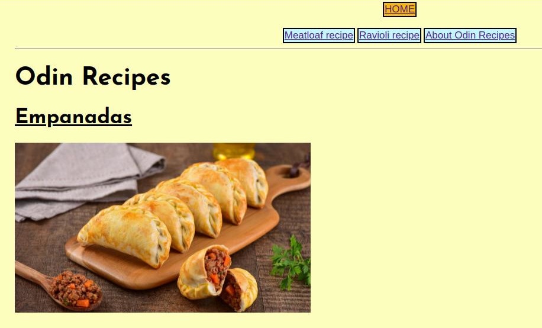

Odin Recipes
About
This page contains information about Odin Recipes website.
Odin Recipes is a web project created in January 2024 as a part of The Odin Project's curriculum. It aims to demonstrate the web creator's HTML and CSS abilities by creating a simple webpage using different elements of the mentioned languages.
This is screenshot of an older version of the website, which featured a links section on top of the page instead of a sidebar. Also, the content was not centered, but aligned to the left.